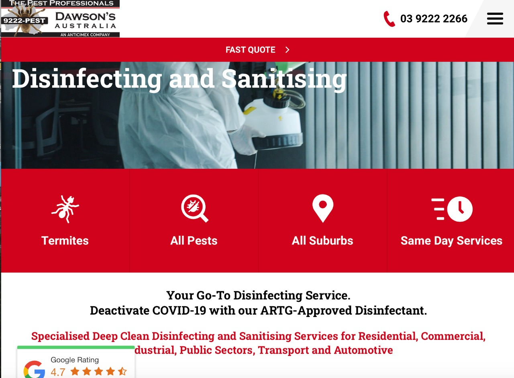

In this section, I am going to review a web application offering disinfecting services for comparison and analysis. I could not find any such application offering service in Pakistan. However, I have found one such application
This web page had a informative home page, with an interactive navigation bar and easy to use interface.
This is another feature that of the web pages, that I would rate highly as it informs the user regarding the products and services, as well as their uses, and benefits. I would definitely like to incorporate.
Here is another screenshot from the web page explaining the specifications of the products as well as the certifications. However, I believe there is too much information here for the reader and in my opinion this much reading is not required. Therefore, in my application, I would try to keep the information short and precise.